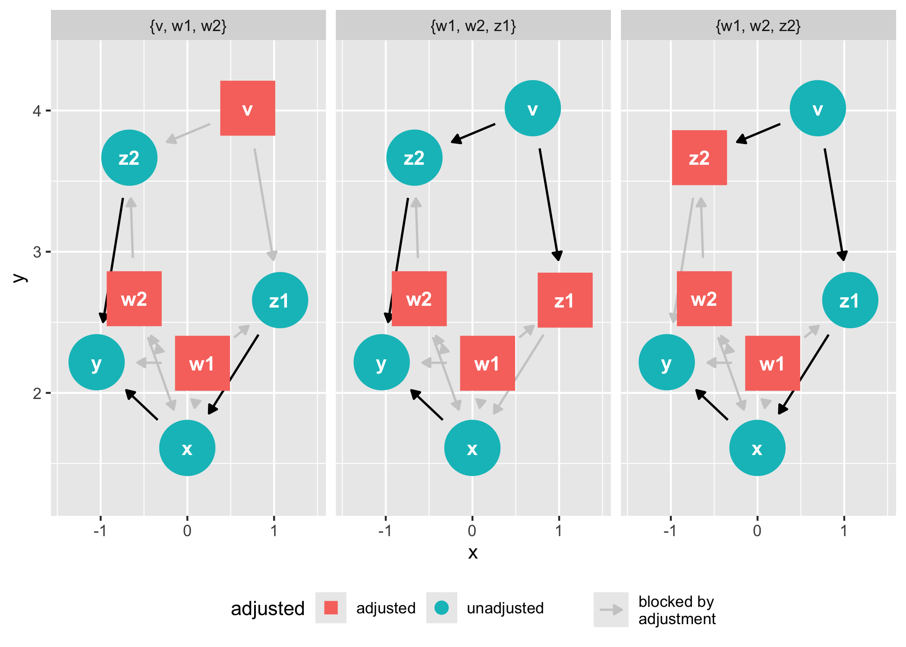

Tidy, analyze, and plot causal directed acyclic graphs (DAGs). ggdag uses the powerful dagitty package to create and analyze structural causal models and plot them using ggplot2 and ggraph in a consistent and easy manner.
Installation
You can install ggdag with:
install.packages("ggdag")Or you can install the development version from GitHub with:
# install.packages("devtools")
devtools::install_github("malcolmbarrett/ggdag")Example
ggdag makes it easy to use dagitty in the context of the tidyverse. You can directly tidy dagitty objects or use convenience functions to create DAGs using a more R-like syntax:
library(ggdag)
library(ggplot2)
# example from the dagitty package
dag <- dagitty::dagitty("dag {
y <- x <- z1 <- v -> z2 -> y
z1 <- w1 <-> w2 -> z2
x <- w1 -> y
x <- w2 -> y
x [exposure]
y [outcome]
}")
tidy_dag <- tidy_dagitty(dag)
tidy_dag
#> # A DAG with 7 nodes and 12 edges
#> #
#> # Exposure: x
#> # Outcome: y
#> #
#> # A tibble: 13 × 8
#> name x y direction to xend yend circular
#> <chr> <dbl> <dbl> <fct> <chr> <dbl> <dbl> <lgl>
#> 1 v 0.496 -3.40 -> z1 1.83 -2.92 FALSE
#> 2 v 0.496 -3.40 -> z2 0.0188 -2.08 FALSE
#> 3 w1 1.73 -1.94 -> x 2.07 -1.42 FALSE
#> 4 w1 1.73 -1.94 -> y 1.00 -0.944 FALSE
#> 5 w1 1.73 -1.94 -> z1 1.83 -2.92 FALSE
#> 6 w1 1.73 -1.94 <-> w2 0.873 -1.56 FALSE
#> 7 w2 0.873 -1.56 -> x 2.07 -1.42 FALSE
#> 8 w2 0.873 -1.56 -> y 1.00 -0.944 FALSE
#> 9 w2 0.873 -1.56 -> z2 0.0188 -2.08 FALSE
#> 10 x 2.07 -1.42 -> y 1.00 -0.944 FALSE
#> 11 y 1.00 -0.944 <NA> <NA> NA NA FALSE
#> 12 z1 1.83 -2.92 -> x 2.07 -1.42 FALSE
#> 13 z2 0.0188 -2.08 -> y 1.00 -0.944 FALSE
# using more R-like syntax to create the same DAG
tidy_ggdag <- dagify(
y ~ x + z2 + w2 + w1,
x ~ z1 + w1 + w2,
z1 ~ w1 + v,
z2 ~ w2 + v,
w1 ~ ~w2, # bidirected path
exposure = "x",
outcome = "y"
) %>%
tidy_dagitty()
tidy_ggdag
#> # A DAG with 7 nodes and 12 edges
#> #
#> # Exposure: x
#> # Outcome: y
#> #
#> # A tibble: 13 × 8
#> name x y direction to xend yend circular
#> <chr> <dbl> <dbl> <fct> <chr> <dbl> <dbl> <lgl>
#> 1 v -3.58 3.30 -> z1 -4.05 4.63 FALSE
#> 2 v -3.58 3.30 -> z2 -2.23 3.74 FALSE
#> 3 w1 -3.03 5.74 -> x -3.20 5.14 FALSE
#> 4 w1 -3.03 5.74 -> y -1.98 5.22 FALSE
#> 5 w1 -3.03 5.74 -> z1 -4.05 4.63 FALSE
#> 6 w1 -3.03 5.74 <-> w2 -2.35 4.72 FALSE
#> 7 w2 -2.35 4.72 -> x -3.20 5.14 FALSE
#> 8 w2 -2.35 4.72 -> y -1.98 5.22 FALSE
#> 9 w2 -2.35 4.72 -> z2 -2.23 3.74 FALSE
#> 10 x -3.20 5.14 -> y -1.98 5.22 FALSE
#> 11 y -1.98 5.22 <NA> <NA> NA NA FALSE
#> 12 z1 -4.05 4.63 -> x -3.20 5.14 FALSE
#> 13 z2 -2.23 3.74 -> y -1.98 5.22 FALSEggdag also provides functionality for analyzing DAGs and plotting them in ggplot2:
ggdag_adjustment_set(tidy_ggdag, node_size = 14) +
theme(legend.position = "bottom")
As well as geoms and other functions for plotting them directly in ggplot2:
dagify(m ~ x + y) %>%
tidy_dagitty() %>%
node_dconnected("x", "y", controlling_for = "m") %>%
ggplot(aes(
x = x,
y = y,
xend = xend,
yend = yend,
shape = adjusted,
col = d_relationship
)) +
geom_dag_edges(end_cap = ggraph::circle(10, "mm")) +
geom_dag_collider_edges() +
geom_dag_point() +
geom_dag_text(col = "white") +
theme_dag() +
scale_adjusted() +
expand_plot(expand_y = expansion(c(0.2, 0.2))) +
scale_color_viridis_d(
name = "d-relationship",
na.value = "grey85",
begin = .35
)And common structures of bias:
ggdag_butterfly_bias(edge_type = "diagonal")